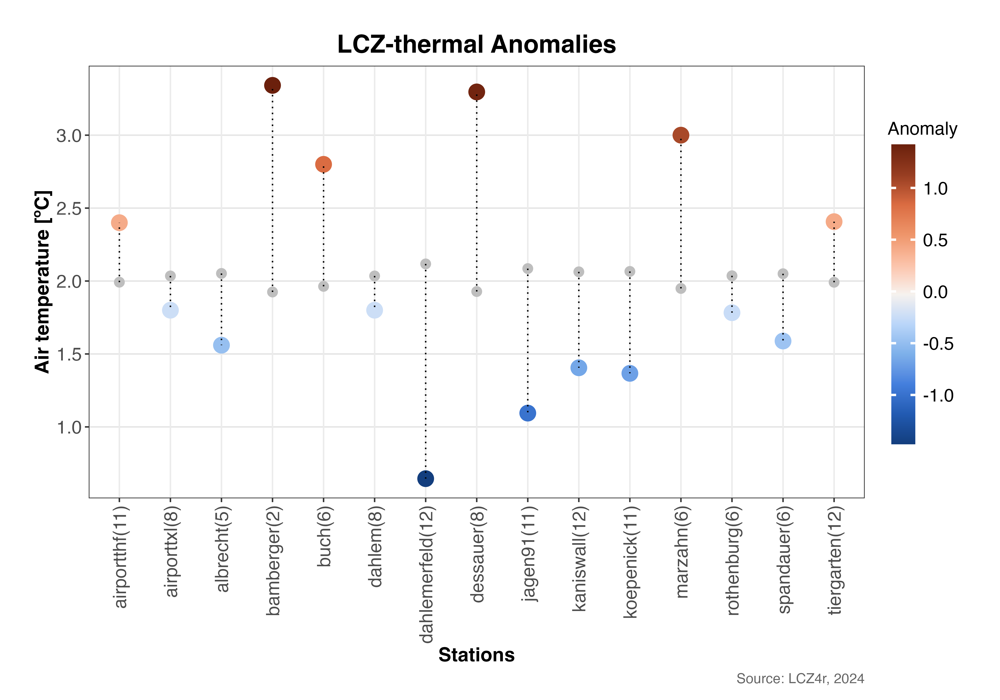

Thermal Anomalies
Max Anjos
May 10, 2025
Source:vignettes/local_func_anomaly.Rmd
local_func_anomaly.RmdGetting Started
The thermal anomaly is a great way to evaluate the intra-urban air temperatures differences. At each LCZ station, the thermal anomaly is defined as the difference between its temperature and the overall mean temperature of all LCZ stations. For instance, a positive temperature anomaly indicates that a particular LCZ is warmer compared to all other LCZs.
The lcz_anomaly() function has the same utilities as the
lcz_ts() regarding Flexibility of time
selection and Splitting LCZ time series by temporal
window or site.
Plotting Options with plot_type
The plot_type argument in lcz_anomaly() offers several visualizations:
- “diverging_bar”: A horizontal bar plot that diverges from the center (zero), with positive anomalies extending to the right and negative anomalies to the left.
- “bar”: A bar plot showing the magnitude of the anomaly for each station, colored by whether the anomaly is positive or negative.
- “dot”: A dot plot that displays both the mean temperature values and the reference values, with lines connecting them. The size or color of the dots can indicate the magnitude of the anomaly
- “lollipop”: A lollipop plot where each “stick” represents an anomaly value and the dots at the top represent the size of the anomaly. Below are examples using each plot type.
# Get the LCZ map for your city
lcz_map <- lcz_get_map_euro(city="Berlin")
# Load sample data from LCZ4r
data("lcz_data")1. Diverging bar Plot
# If you want the thermal anomalies for on 6th Feb 2019 at 05:00h
lcz_anomaly(lcz_map,
data_frame = lcz_data,
var = "airT",
station_id = "station",
time.freq = "hour",
year = 2019, month = 2, day = 6, hour=5,
plot_type = "diverging_bar",
ylab = "Air temperature [ºC]",
xlab = "Stations",
title = "LCZ-thermal Anomalies",
caption = "Source: LCZ4r, 2024")
2. Bar plot
# Bar plot for on 6th Feb 2019 at 05:00h
lcz_anomaly(lcz_map,
data_frame = lcz_data,
var = "airT",
station_id = "station",
time.freq = "hour",
year = 2019, month = 2, day = 6, hour=5,
plot_type = "bar"
)
3. Dot plot
# Dot plot for on 6th Feb 2019 at 05:00h
lcz_anomaly(lcz_map, data_frame = lcz_data, var = "airT",
station_id = "station", time.freq = "hour",
year = 2019, month = 2, day = 6, hour=5,
plot_type = "dot"
)
4. Lollipop plot
# Dot plot for on 6th Feb 2019 at 05:00h
lcz_anomaly(lcz_map, data_frame = lcz_data, var = "airT",
station_id = "station", time.freq = "hour",
year = 2019, month = 2, day = 6, hour=5,
plot_type = "lollipop"
)
Splitting Anomalies with the “by” argument
# Calculate anomalies for nighttime and daytime on 6th Feb 2019
lcz_anomaly(lcz_map, data_frame = lcz_data, var = "airT",
station_id = "station", time.freq = "hour",
year = 2019, month = 2, day = 6,
plot_type = "diverging_bar",
by = "daylight"
)
Combining daylight with months
# Calculate monthly mean of anomalies for Feb and Oct 2019
lcz_anomaly(lcz_map, data_frame = lcz_data, var = "airT",
station_id = "station", time.freq = "hour",
year = 2019, month = c(2, 8),
plot_type = "bar",
by = c("daylight", "month")
)Return a dataframe as result
To save return in R, set iplot = FALSE and create an object.
#Return daylight dataframe on 15th January of 2020
my_output <- lcz_anomaly(lcz_map, data_frame = lcz_data, var = "airT",
station_id = "station", time.freq = "hour",
year = 2019, month = c(2, 8),
plot_type = "bar",
by = c("daylight", "month"),
iplot = FALSE
)